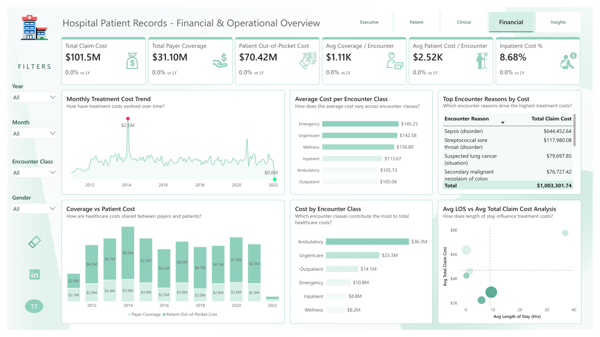

Financial burden is concentrated on patients
Patients carry $70.42M of the $101.5M total claim cost.
69% of costs are out-of-pocket, while payer coverage is 31%.
Patient affordability and access may be under pressure.
Expand payer partnerships and patient financial-assistance pathways.
Evidence: $101.5M total claim cost • $31.10M payer coverage • $70.42M patient out-of-pocket
Dashboard Page 4 — Financial & Operational
